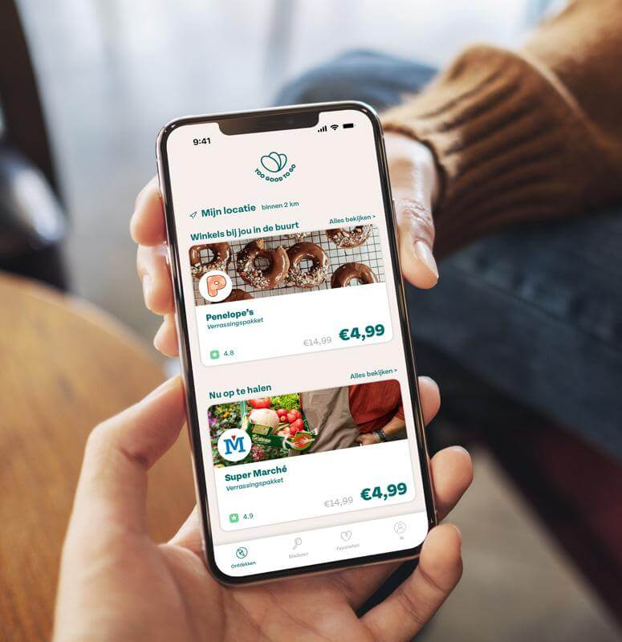

Red voor sluitingstijd de planeet
Elk jaar wordt 2.5 miljard ton voedsel verspild
Wij dromen van een planeet zonder voedselverspilling. Elke dag wordt onverkocht eten van je favoriete restaurants, supermarkten, cafés en winkels verspild, gewoon omdat het overblijft. Met de Too Good To Go-app maak je eenvoudig het verschil en red je Verrassingspakketten met goed eten voor een nog betere prijs.
 download app4,0M
Gebruikers van de Too Good To Go-app
10.299
Actieve bedrijven op het platform
23M
Geredde verrassingspakketten, aantal gegroeid
Enkele van onze partners
Zo werkt het
Open de app en zoek Verrassingspakketten met eten van restaurants en winkels in jouw buurt.
Zo werkt het
Kies bij Ontdekken je Verrassingspakket, reserveer en bevestig je aankoop. Ga op de afgesproken tijd naar de winkel om je pakket op te halen.
Zo werkt het
Neem je eten mee en geniet ervan. Je hebt een gerecht gered van verspilling en iets goeds gedaan voor de planeet!
Zoek deals in jouw buurt
Er is genoeg eten in jouw omgeving dat wacht op redding. Ga naar de Too Good To Go-app en zoek Verrassingspakketten bij jouw favoriete winkels en restaurants.
2.335
Bakkers
1.726
Restaurants
5.102
Supermarkten
Wat moet je weten
Hoeveel kost het?
Het downloaden van de app is 100% gratis. Je betaalt alleen voor de afgeprijsde Surprise Bag die je koopt.
Hebben jullie een lijst met winkels in mijn buurt?
Je kunt de app downloaden en alle winkels om je heen zien die deel uitmaken van onze beweging. De app is gratis, dus het is gemakkelijk te controleren..
Wat voor soort producten kan ik vinden in de app?
Je kunt een groot assortiment producten vinden omdat we met veel verschillende winkels werken. Brood en gebak van bakkerijen, vers bereide maaltijden van afhaalmaaltijden en restaurants, ontbijt van hotels, buffetvoedsel, boodschappen van de supermarkt ... en zelfs bloemen van bloemenwinkels! Er zit altijd wel iets bij voor jou! Alle verse etenswaren die niet zijn verkocht met een consumptiedatum, kunnen worden verkocht via de app. Sommige producten hebben mogelijk de datum van minimale houdbaarheid bereikt en zijn nog steeds goed voor consumptie.